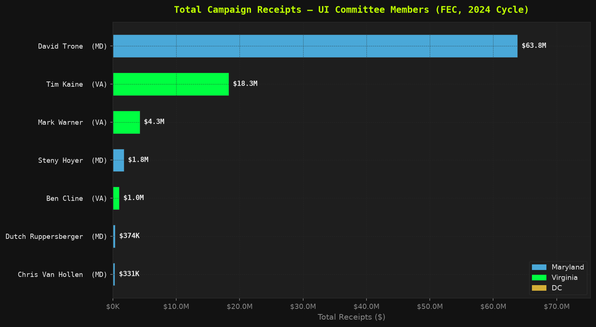
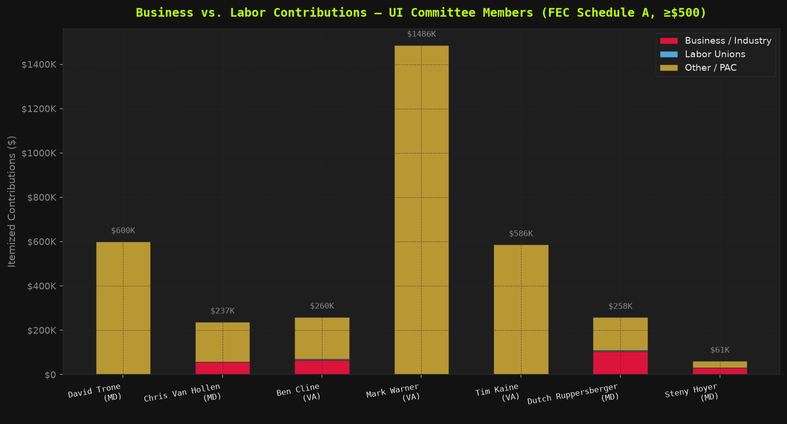
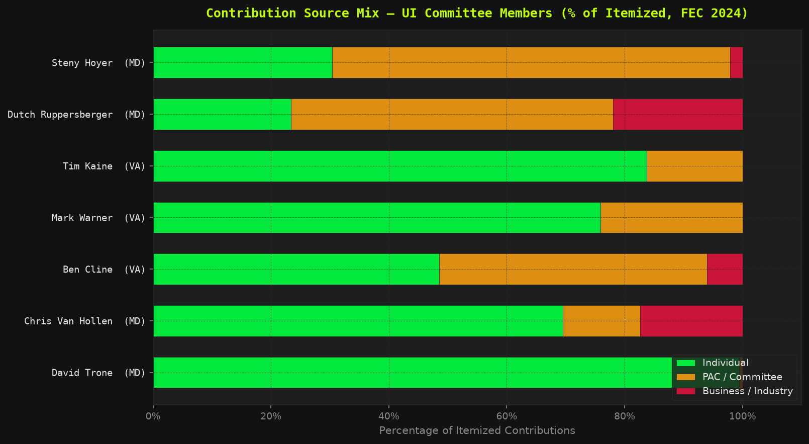

Seven federal legislators with UI-relevant committee assignments were analyzed using FEC 2023–2024 reporting period data. This is not an assertion of corruption. It is a documentation of access patterns — and an honest accounting of what the public data can and cannot show.
Disclosure: Warner (VA, 2026 race) and Van Hollen (MD, ~2028 race) were not 2024 candidates. Their figures are off-cycle committee maintenance, included for completeness, not as 2024 election activity.
Raw FEC data is misleading in three specific ways, and every honest analysis has to correct for them:
| Member | (A) Raw ReceiptsAs FEC reports — uncorrected | (B) True Outside MoneySelf-loans correctly removed | (C) Verified B:L SignalOnly where coverage is meaningful | (D) Per-Month RateNormalized for active window |
|---|---|---|---|---|
| David TroneMD · Ways & Means | $63.8M | $0.9M 93% was self-loans | N/A — self-funded | $3.5M/mo 18mo Senate primary |
| Tim KaineVA · Budget, HELP | $18.3M | $18.3M no true self-fund | Insufficient coverage (3%) | $0.80M/mo 23mo, won re-election |
| Mark WarnerVA · Finance, Banking | $4.3M | $4.3M no true self-fund | Insufficient coverage (0%) | $0.18M/mo off-cycle (2026) |
| Steny HoyerMD · Appropriations | $1.76M | $1.76M | Insufficient coverage (2%) | $0.08M/mo 23mo, won |
| Ben ClineVA · Appropriations, Budget | $1.03M | $0.93M small true self-fund | 13 : 1 business 7% coverage — directional | $0.045M/mo 23mo, won |
| Dutch RuppersbergerMD · Appropriations | $0.37M | $0.37M | 21 : 1 business 30% coverage — strongest signal | $0.016M/mo 23mo, won |
| Chris Van HollenMD · Budget, Banking | $0.33M | ~$0.1M mostly transfers | Vendors mis-tagged | $0.014M/mo off-cycle (2028) |
How to read this: Column A is what raw FEC totals show. Column B removes only verified candidate self-loans (transaction type 15E/16E) — for most members this is $0, exposing the earlier over-exclusion error. Column C reports business-to-labor only where keyword categorization captured enough of the money to be meaningful (Cline 7%, Ruppersberger 30%); elsewhere it's honestly marked insufficient. Column D divides receipts by active fundraising months.
// Investigative Take — The Matrix We tried to find the data that would let us rank these members cleanly. We couldn't — not because the pattern isn't there, but because the public itemization only exposes a sliver of the money, and most of it routes through joint committees designed to be hard to read. That opacity is itself the finding. The two members where the data is legible — Cline and Ruppersberger — both show business outpacing labor 13-to-1 and 21-to-1. The others aren't cleaner. They're just darker.



Total receipts | Self-funded share | Total Wine & More est. revenue
// Investigative Take — Trone A man who co-founded a $2.4 billion retail empire sat on the committee overseeing the tax policy that governs how much his own company pays into unemployment insurance. He then self-funded 98.6% of a $63.8 million Senate campaign, making outside-donor analysis nearly impossible — because there are almost no outside donors ($1.45M of $63.8M total). The conflict of interest isn't hidden in the donor file. It's in the committee roster.
| Body | Their Pay Change (2014–2026) | UI Max WBA Change (2014–2026) | Ratio |
|---|---|---|---|
| MD General Assembly Sets Maryland's $430 max WBA |
+$6,306 (+12.5%) Auto Compensation Commission — no floor vote |
+$0 (0%) Same $430 since 2014 — 12 years frozen |
∞ : 1 |
| VA General Assembly Same session as SB 1056 |
+$32,360 (+183%) proposed $17,640 → $50,000; both chambers 2026 |
+$52 (+13.8%) $378 → $430 via SB 1056 — first since 2014 |
13 : 1 |
| DC Council Sets DC's $444 max WBA |
+CPI auto (~+15%) $115K/yr, CPI-linked, §1-611.09 |
+$85 (+23.7%) $359 → $444 — still below threshold |
0.6 : 1 |
| U.S. Congress 7 members analyzed here |
$0 (0%) $174K frozen since 2009 — COLA denied 23× |
N/A Federal FUTA floor only |
— |
Sources: MD Compensation Commission 2026 · WSET VA 278% raise · DC Code §1-611.09 · CRS RL30064
// Investigative Take — Lawmaker Pay In 2026, the Virginia General Assembly passed a 278% pay raise for legislators the same year it gave UI claimants a $52/week increase, the first since 2014. The ratio is 13:1, in the same session, by the same body. Maryland legislators used an automatic Compensation Commission to pocket $6,306 over four years while the $430 cap they set sat untouched for a decade. They didn't need to vote on their own raises. They did need to vote on yours. They didn't.
committee_type for PACs (items #25–26).
memo_code field, so some pass-through/bundled contributions may inflate business totals. Fix logged as #24.
→ Full data validation, formulas, and limitations | → ← Back to the main audit
Source code and raw data: